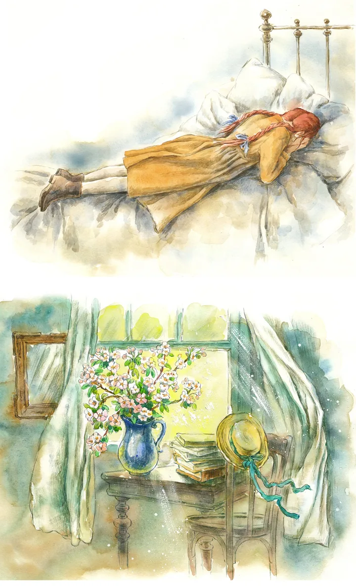

Aproximación mimética
Ana es tratada como un individuo de la vida real. Como lectores, exigimos que su comportamiento sea consistente con su psicología y nivel cognoscitivo. Su manera casi eufórica de hablar, su hiperactividad imaginativa y su desesperada necesidad de agradar, son leídas miméticamente como respuestas de la mente de una niña que ha sufrido la negligencia y la orfandad en el siglo XIX.